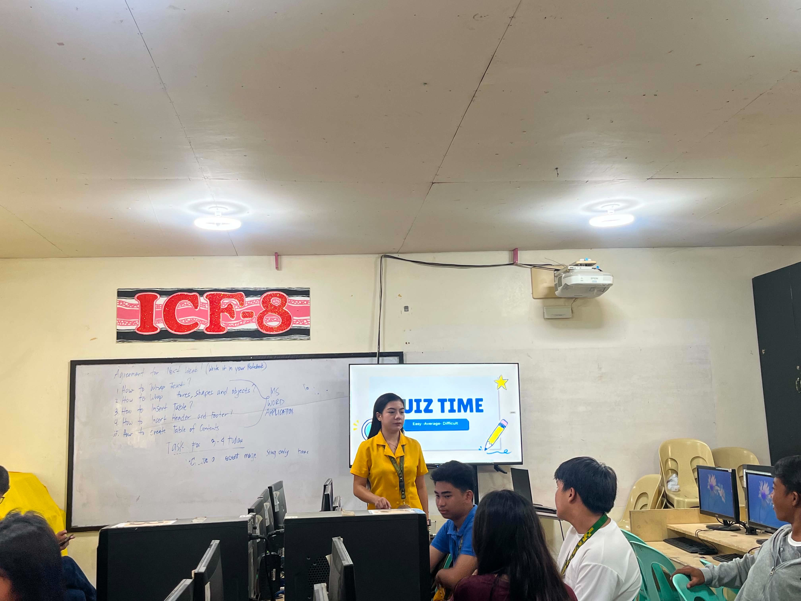

01 / OFF-CAMPUSILOCOS NORTE COLLEGE OF ARTS AND TRADES
INCAT.
Classroom observation, teaching assistance, computer systems servicing practice, Microsoft Word activities, and practical learner assessments shaped my experience in a technology-focused learning environment.
Explore INCAT artifacts